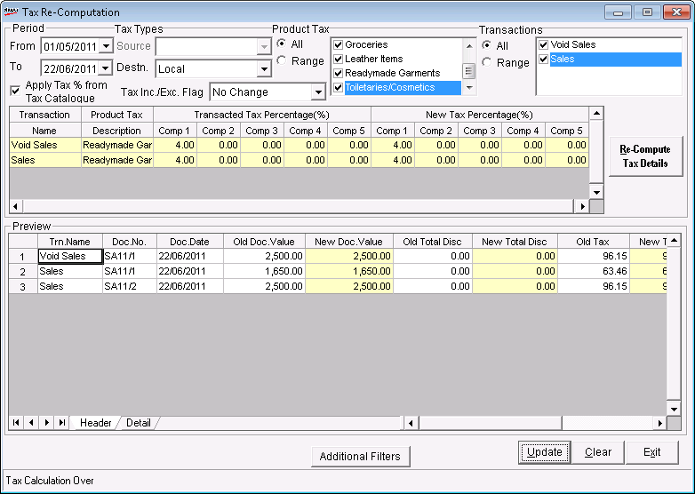

Tax Re-computation is a utility introduced in Shoper 9 POS to recalculate the tax amount of Sales, Sales Return or Void transactions, at a later point of time, if required. This facility is very useful, if you have applied a wrongly catalogued tax details by mistake. This option allows you to change the wrongly catalogued tax rates and thus recalculates the correct tax amount of the transactions and updates it in all the related documents accordingly.
How to reach: Setup > Supervisory Functions > Tax Re-computation
The Tax Re-Computation window is as shown.

Period: By default, the From and To are the current Shoper date. You can enter any date range but the To date cannot be greater than the Shoper date.
Tax Types:
Source: Select the source tax type from the list. The source tax types that are defined in the sales tax catalogue are available for selection.
Destn.: Select the destination tax type from the list. The destination tax types that are defined in the sales tax catalogue are available for selection.
Product Tax: Click All to select all tax groups in the list or click Range and select the required ones from the list.
Transactions: Click All to select all tax groups in the list or click Range and select the required ones from the list. The transaction types available for selection are Sales, Sales Return and Void Sales.
Apply Tax % from Tax Catalogue: Select to apply the tax details as catalogued in the sales tax catalogue.
The selected transaction types that are recorded in the specified period are displayed in the grid. The details displayed in the grid vary based on the selection of the option Apply Tax % from Tax Catalogue.
If the option is selected, then the tax details as per the sales tax catalogue are applied as the new tax rates for recalculating the tax details.
If the option is not selected, you are allowed to enter the new tax rates.
The selected transaction types that are recorded in the specified period are displayed in the grid. The tax percentages (in terms of different components of each tax type) used in the transaction types is displayed. along with the facility to enter the new tax rates. Enter the appropriate tax rates.
Re-Compute Tax Details: To recalculate the tax details as per the new tax rates specified.
Preview: The document details with the old and renewed taxes are displayed.
Additional Filters: Select to recalculate taxes in one or more bills for which the taxes were wrongly calculated.